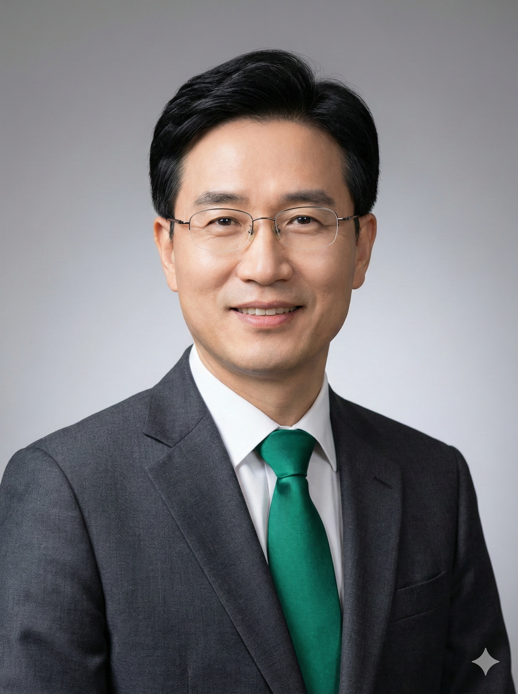

민 부 선 (閔富善 / Min Buson)
"고립을 추방하고 연결(Connecting)을 가르칩니다."
"불굴(不屈)의 100년 역사를 넘어,
포용(Verde)과 도전(Shiny)의 광장으로 나아갑니다."
존경하는 효빈대학교 3만 학우와 4천 교직원, 그리고 세계 각지에서 활약하시는 30만 동문 여러분. 국립 효빈대학교 제26대 총장 민부선입니다.
1925년 효빈상업대학(충승당)으로 첫발을 내디딘 우리 대학은 지난 한 세기 동안 지역사회의 아픔과 성장을 함께하며 대한민국 최대 규모의 국가거점국립대학교(17개 단과대학·207개 학과·5대 캠퍼스)로 우뚝 섰습니다. 저는 총장 취임 일성으로 "고립된 상아탑을 부수고, 연결된 광장으로 나아가겠다"고 약속드리며 '내치(內治)의 베르데(Verde)'와 '외치(外治)의 샤이니(Shiny)'라는 양날개 혁신을 추진해 왔습니다.
첫째, '베르데(Verde: 푸른 숲·치유·연결)' 정신은 경쟁과 혐오에 지친 청년들에게 대학이 가장 안전하고 따뜻한 마이 페이스(My Pace)의 보금자리가 되어야 한다는 신념입니다. 정부 지원 사업보다 앞서 교비 100%로 시작한 천원의 아침밥 『엠마의 식탁』, 기숙사 전 층에 도입한 셰어하우스형 커뮤니티 라운지, 4,950석 규모의 문화 복지 성지 『베르데 홀(29동)』이 그 결실입니다. 특히 학우의 존엄과 인권을 짓밟거나 본교 교표(과잠·학생증)를 사칭해 범죄를 저지르는 내·외부 세력에 대해서는 단 1원의 합의도 없이 대학의 모든 법적·행정적 권력을 총동원해 끝까지 단죄하고 피해 학우를 완벽히 보호하는 '무관용 방패 원칙'을 확고히 세웠습니다.
둘째, '샤이니(Shiny: 글로벌 도전과 과감한 투자)' 비전은 지방 대학의 한계를 정면 돌파하는 엔진입니다. 거점국립대 최초로 성실 실패를 100% 면책하는 100억 원 규모의 『효빈 콘텐츠 스타트업 펀드』를 조성하고, HAF(효빈 애니메이션 페스티벌) 공식 학술·문화 본부(Zone 4) 공동 주관을 통해 연간 185억 원의 자체 재원을 창출하여 전국 유일 5년 연속 등록금 동결과 3년 연속 거점국립대 유지취업률 1위(2025 중앙일보 대학평가 종합 8위)를 달성했습니다.
우리 효빈대학교에 혐오와 고립이 설 자리는 없습니다. 여러분의 청춘이 늘 푸른(Evergreen) 숲에서 가장 눈부시게(Shiny) 빛나도록 총장실의 문은 언제나 활짝 열려 있습니다. 감사합니다.
제26대 민부선 총장 주요 연설문 · 서한문 · 특별담화록
베르데 홀(29동) 개관식 및 신입생 환영 축사
"친애하는 학우 여러분, 오늘 문을 여는 이 에메랄드 그린빛 전당의 이름은 '베르데 홀(Verde Hall)'입니다. 과거 일부 편협한 고립주의자들이 주창했던 분리와 혐오의 철학은 오늘부로 우리 캠퍼스에서 영원히 추방되었습니다. 유학생과 장애 학우, 지역 시민과 청년들이 문화와 예술로 서로 연결(Connecting)되고 치유받는 포용의 광장, 이곳이 바로 우리의 약속의 땅입니다. Shiny하게 나아갑시다! 우리 대학의 미래는 에버그린(Evergreen)입니다!"
교권 남용 비위 및 '효빈대 과잠 사칭 성범죄자' 무관용 단죄 담화문
"교육자로서, 그리고 이 대학의 총장으로서 천명합니다. 과거 학우를 협박한 비위 교수(파면·징역 30년)와 가해 학생 3인방(영구 출교·징역 19년)에 이어, 감히 타 부실대 제적생(추 모 씨)이 우리 국립 효빈대학교 사범대학 체육교육과의 신성한 과잠을 도둑질하듯 사 입고 학력과 생일까지 위조해 사회복지학대학 후배 학우를 위협한 사건은 대학 전체에 대한 테러입니다. 따뜻한 치유와 포용은 사람에게나 베푸는 것이지, 남의 학교 이름을 훔쳐 입고 학우의 영혼을 해치려 한 해충에게 베푸는 것이 아닙니다. 우리 대학이 가진 모든 법적·행정적 권력으로 영원히 Lock-On(대법원 징역 15년 확정)하였으며, 피해 학우는 본교 부설 종합사회복지관 정식 사회복지사로 끝까지 보호하겠습니다."
『엠마의 트램 탑승 단팥빵』 수호와 5년 연속 등록금 동결 서한
"사랑하는 효빈 가족 여러분, 학생회관 매점의 빵은 단순한 밀가루 덩어리가 아니라 결식아동들에게 전해지는 도시의 온기이자 연결의 증거입니다. 이 성스러운 빵과 교내철도(HBNU Rail)를 모욕하는 자에게는 총장이 직접 A07 대학본부역 승강장으로 출격해 책임을 물을 것입니다. 아울러 HAF Zone 4 문화사업과 산학협력 수익금 185억 원을 전액 학생 복지와 장학금으로 환원하여 올해도 등록금 전면 동결과 천원의 아침밥 '엠마의 식탁'을 흔들림 없이 지켜내겠습니다."
🏛️ 효빈대학교 역대 총장 계보 요약 (1925~2026)
| 대수 및 재임기 | 교명 및 체제 | 재임 중 핵심 업적 및 역사적 사건 |
|---|---|---|
| 초대~제5대 (1925~1945) | 효빈상업대학 (개교기) | 1925.09.14 개교 및 본관 충승당(3동) 준공, 민족 상학·경제 인재 양성 |
| 제6대~제14대 (1946~1979) | 국립 효빈대학 | 1946년 국립대 승격 및 구 효빈전차 정문 연장, 1968년 지선 폐선 당시 '남구~중구~효빈대앞 본선' 존치 결사 수호 |
| 제15대~제21대 (1980~2002) | 국립 효빈대학교 (종합대) | 1980년 종합대 승격, 1995년 2호선 효빈대역 개통, 1999년 의·치·한·수 통합의과대학 및 사회복지학대학 출범, 2000년 교내철도 A선(트램) 개통 |
| 제22대~제25대 (2003~2020) | 5대 멀티캠퍼스 확장기 | 2006~2007 두청운수 독점 사태 극복, 2010년 구 효빈전차 본선 7호선(#FF8899) 공영화, 2017년 빈효선 개통, 2018년 B선 모노레일 개통, 2019년 베르데 홀 개관 |
| 제26대 민부선 (2021~현재) | 글로컬 혁신 선도대학 (연임) | 천원의 아침밥 '엠마의 식탁', 100억 콘텐츠 스타트업 펀드, 등록금 5년 연속 동결, 유지취업률 3년 연속 1위, 2025 개교 100주년 및 중앙일보 대학평가 종합 8위 달성 |